A decentralised coworking service that repurposes vacant, energy-inefficient apartments in Milan — bringing work closer to home, creating temporary communities, and giving empty buildings a second life.
一项分散化共享办公服务，将米兰空置的低能效公寓改造为社区办公空间——让工作地点离家更近，降低能耗，为空置建筑赋予新的生命。
不只是一个办公空间——而是以节能意识、社区连结与「好的工作应就在家附近」这一信念为基础的新型城市基础设施。
Not just a workspace — a new kind of urban infrastructure built on energy consciousness, community, and the belief that good work should happen close to home.
我们从十年视角出发，分析各类变化趋势的价值走向，从而揭示了节能在本项目中的核心意义。这一研究过程让我们识别出以下六项关键洞察：
We explored a ten-year perspective by analysing the values of change, which revealed the need for energy conservation in our initiative. This process and research led us to identify these insights:
价值变化的研究让我们得出结论：城市是本项目最具潜力的落地场景。NetNook 将战略重心聚焦于米兰，尤其是其充满活力的共享办公领域。
The identified values of change conclude that the city provides the most promising context. NetNook's strategic decision is to focus on the city of Milan, with emphasis on the dynamic realm of coworking.
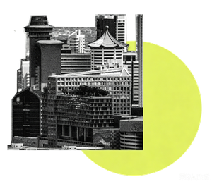
气温持续攀升将成为日常生活中越来越重要的影响因素，制冷系统需求激增，极端天气与能源危机将愈发频繁。
More severe climate change — temperatures reaching higher peaks, increasing demand for cooling systems and dealing with weather crises.
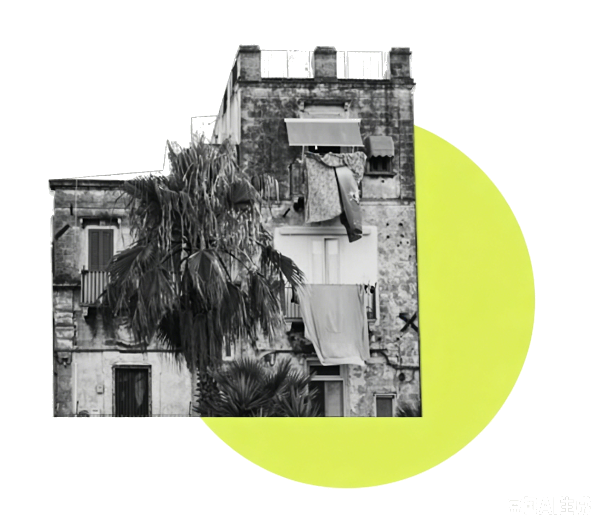
据ISTAT数据，米兰人口约135万，城市中约43,000栋住宅楼，70万套建于1919–1960年。仅0.6%的住宅达到A或A+级。
In Milan 70% of houses are class F & G — 43,000 blocks (66%), 700,000 dwellings built 1919–1960. Only 0.6% reach A or A+.
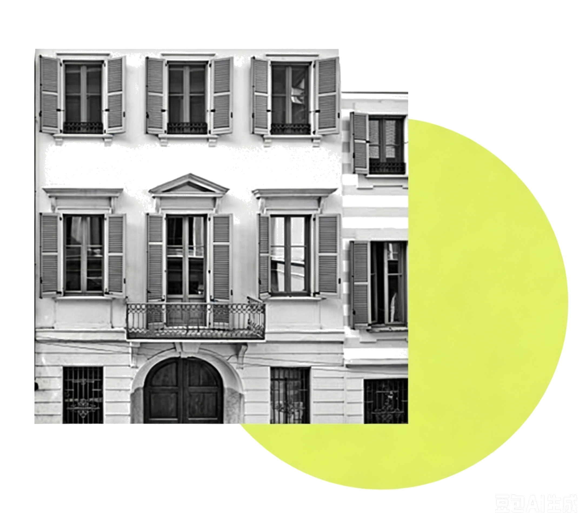
预计2050年意大利人口减少8%，城镇化率将升至81.8%，越来越多的人向城市聚集。
More urbanisation by 2050 — Italy's population projected to decrease by 8%; urbanisation rate reaches 81.8%.
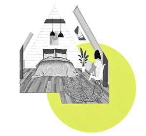
法规要求住宅须从G级改造至F级（2030年截止）。至2033年，意大利310–370万套住宅（共1220万套）面临强制翻新。
Italians must renovate by 2033 — 3.1–3.7M of 12.2M residential properties need redevelopment; not every owner can afford it.
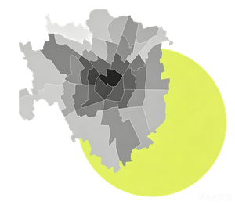
Brera-Moscova 年均工资 €94,554，Quarto Oggiaro 仅 €17,986，收入差距高达 €76,568。地理位置即决定命运。
Geographical disparities — city centre vs suburbs income gap of €76,568 (Brera-Moscova €94k vs Quarto Oggiaro €18k).
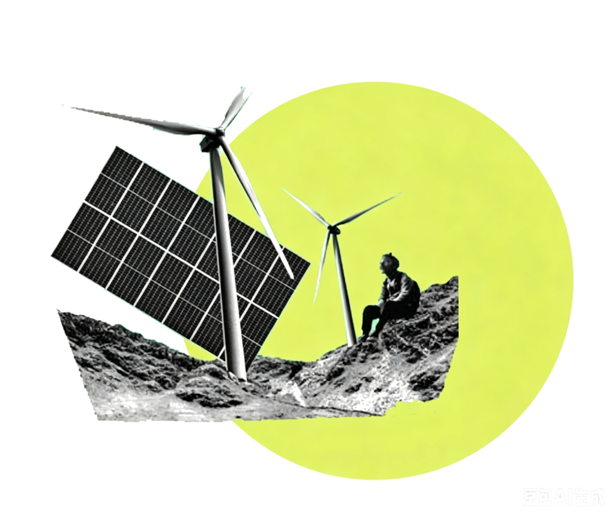
消费者往往以使用频次来估算能源消耗，存在"认知可及性"偏差——越常想到的，越以为用得多，节能意识因此被扭曲。
People don't know their home energy use — consumers use frequency of interaction as a proxy for consumption; "cognitive accessibility" bias.
远程办公的现状
Working Remotely
So, given their attractiveness, why don't people make use of them?
既然共享办公空间如此吸引人，为什么大家不去使用呢？
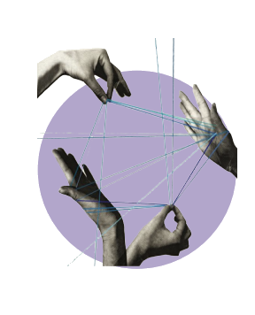
超过700万意大利人从事远程工作，其中约27%在办公室与家庭之间交替，约15%完全居家办公。大城市居民远程比例明显高于小城镇。
7 million Italians work remotely — 27% alternating office & home, 15% fully remote. Larger cities show higher rates.
90% 的企业表示将在2024年底前要求员工返回办公室；60% 的员工表示若被强制返岗将选择辞职。
Conflicts with company — 90% plan office return by end of 2024; 60% of employees would quit if forced back.
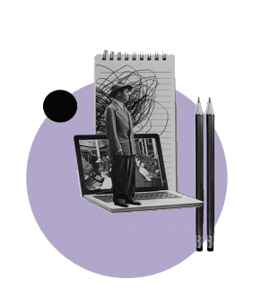
18% 建筑与设计
15% 数字职业
8% 信息与通信技术
5% 社会创新
18% Architecture & design · 15% Digital professions · 8% ICT · 5% Social innovation
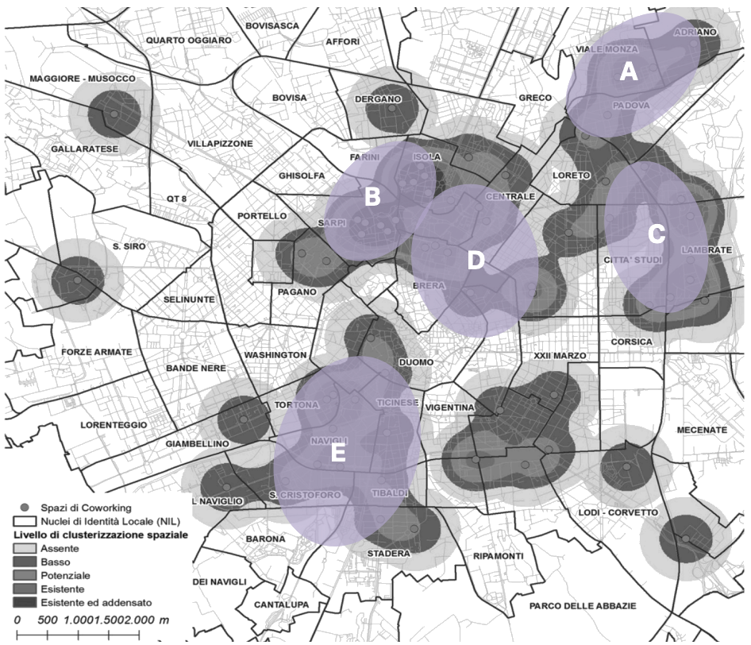
这些共享办公空间位于米兰核心地带，周边商业密集，靠近高校与研究机构，确保高素质人才供给，同时公共交通便捷，可达性强。
空间规模与复杂度各异——从拥有大量座位的大型混合空间，到席位有限的小型协作空间皆有覆盖，特征多元，折射出不同的设计初衷与空间尺度。
So, given their attractiveness, why don't people make use of them?
在服务开发过程中，我们对米兰大型私企总部（HQ）的分布进行了专项调研，旨在明确哪些企业活跃于米兰商业生态中，并识别 NetNook 服务可触达的潜在目标客户群体。
In developing our service, we researched the HQ landscape of large private companies in Milan — to identify which companies are present and to map the different target customers we could potentially reach.
本地图专注于私营企业总部，有意排除了公共机构与准公共机构（如市政府、ATM、MM、RAI 等）、行业协会（如 Assolombarda）、工会、非营利组织，以及大学与大型律师事务所的总部。
The map focuses exclusively on private company HQs, intentionally excluding public & para-public entities, associations, trade unions, non-profits, universities and large law firms.
*Source: arcipelagomilano.org/archives/54009
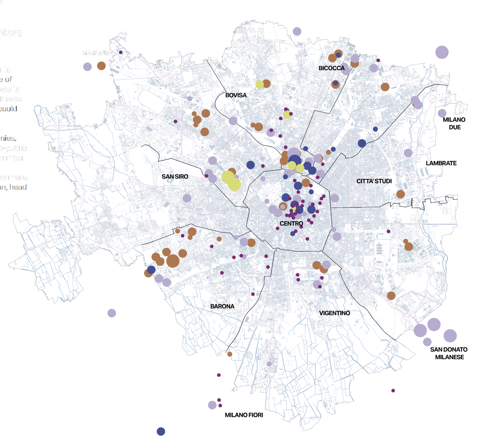
数据分析揭示了现有共享办公模式的所有不足，也为本项目的开发奠定了基础——NetNook 正是为了回应这些两难困境而生。
The analysis provided the basis for the project and enabled the identification of all shortcomings in existing co-working systems.
Evolution of Meaning
The 5 Ws — a classic formula for information gathering
Stakeholders — who is involved in the NetNook ecosystem
主要客户，以B2B模式为核心商业形态。
由企业提供服务的终端使用者。
希望盘活低能效空置房屋的业主。
负责Hub生产与安装部署的供应商。
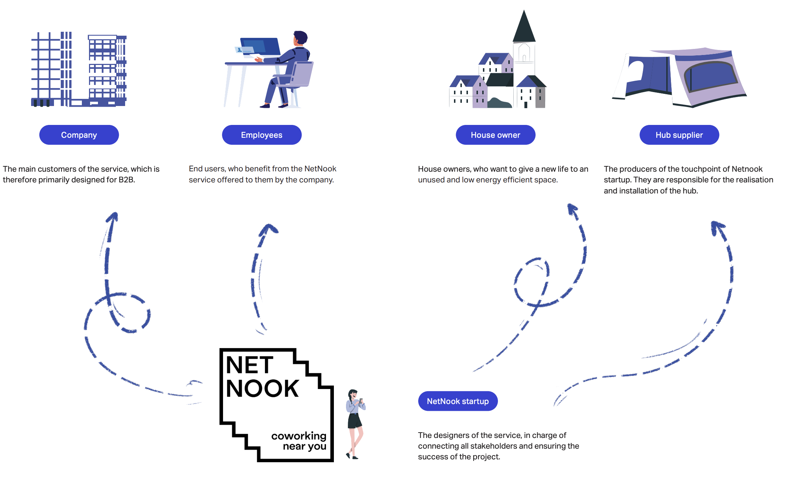
服务设计方，协调各利益相关者并推动项目落地。
Mapping strengths, weaknesses, opportunities and threats in the Italian smart-working market. / 绘制意大利智慧办公市场的优劣势、机会与威胁。
Four Actions Framework — creating a new value curve in the coworking market. / 四项行动框架——在共享办公市场中创造新价值曲线。
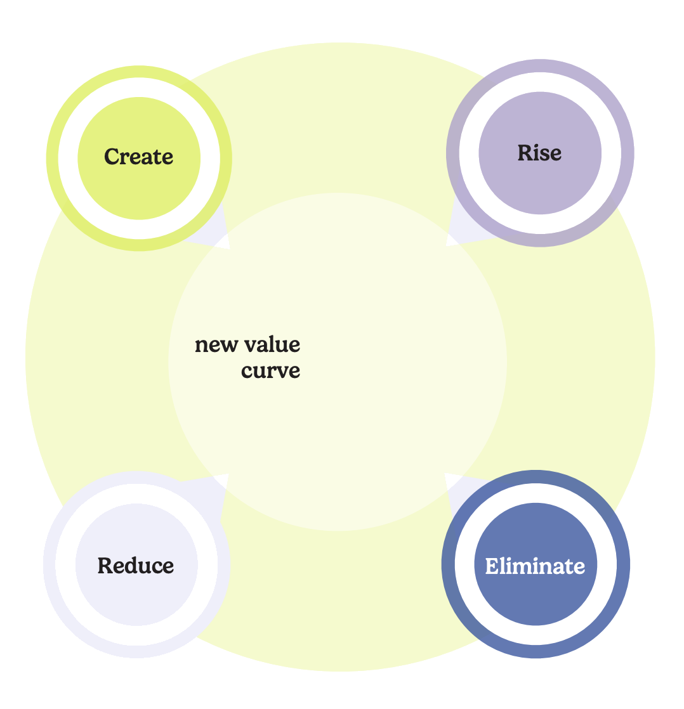
Blue Ocean Strategy · Competitor Analysis
通过观察市场，我们发现竞争者之间存在高度相似的共性——评估标准涵盖服务内容、分布模式、吸引力、商业模式、成本与可持续性。如图表所示，每家公司的产品至少与同行业中的另一家高度雷同。而 NetNook 则提出了全新的共享办公市场愿景，实现了真正的差异化竞争。
By observing the market, we noticed common characteristics among competitors. Criteria included service offering, distribution, attractiveness, business model, costs and sustainability. Each company's offer is similar to at least one other in the sector. NetNook proposes a new vision, differentiating itself from competitors.
Main, secondary and supportive services across the NetNook ecosystem. / NetNook 生态系统中的核心、次级与支持性服务全景。
从左到右是服务的展开层级——每一列代表一个服务维度，箭头指向下一级的具体服务项目。
Read left to right: each column represents a service dimension, with arrows pointing to its sub-offerings. Three horizontal tracks group services by delivery context.
Nine actor groups mapped by their role in the service — from co-managing at the core to informing at the periphery. / 九类参与方按其在服务中的角色深度排布，从核心共同管理到外围信息传递。
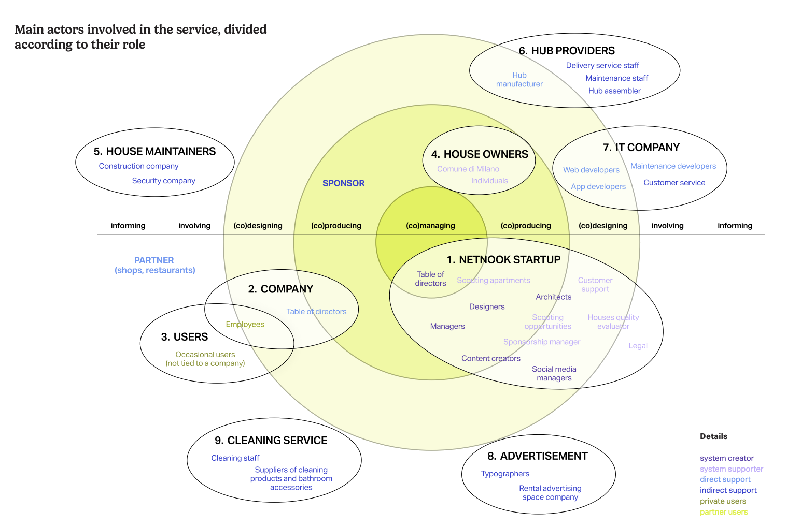
这张图以同心圆的形式，将所有参与方按其与 NetNook 服务的关系深度由内向外排布。
How value, information and money flow between every actor in the NetNook ecosystem. / 价值、信息与资金如何在 NetNook 生态系统各角色之间流动。
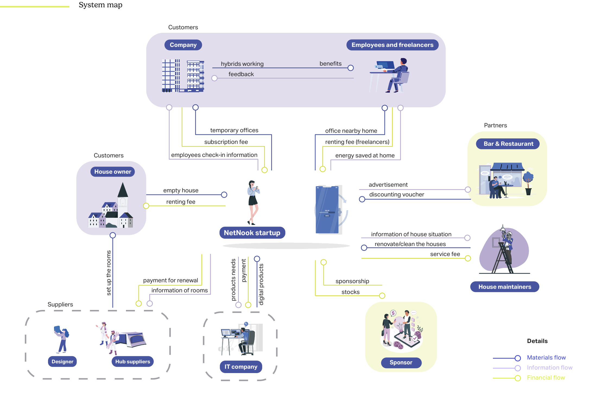
Adapted from Business Model Generation — Osterwalder & Pigneur. / 改编自奥斯特瓦德商业模式画布。
An employee's end-to-end experience — from discovering NetNook to checking out after work. / 一名员工的完整使用旅程——从初次知晓到完成签退。
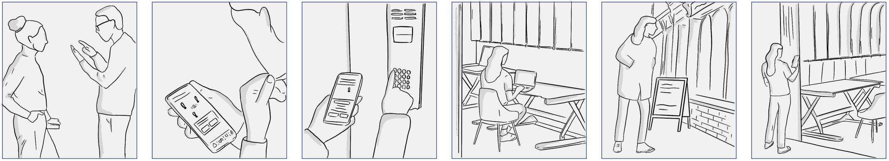
Three perspectives mapped across project launch, prototyping and service implementation phases. / 从项目启动、原型测试到服务落地，三条旅程线的完整路径。
NetNook Startup 作为服务的核心主导方，承担了项目中绝大多数的共同设计、共同生产与共同管理角色。
As the main actor of the service, NetNook Startup combines most of the co-designing, co-producing and co-managing roles involved in the project.
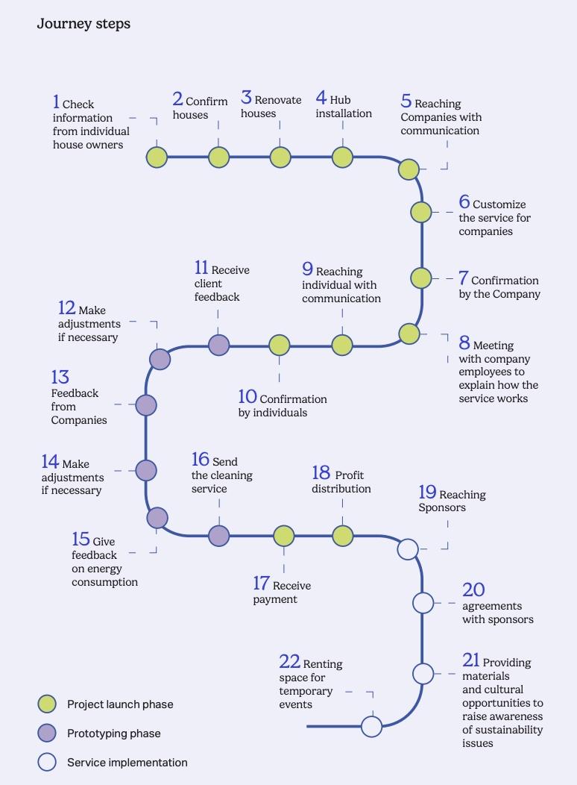
NetNook 需要接触的核心利益相关方：企业董事会负责采购决策，员工则是服务的最终使用者。
The stakeholders NetNook must deal with to sell the service: directors who make purchasing decisions, and employees as end users.
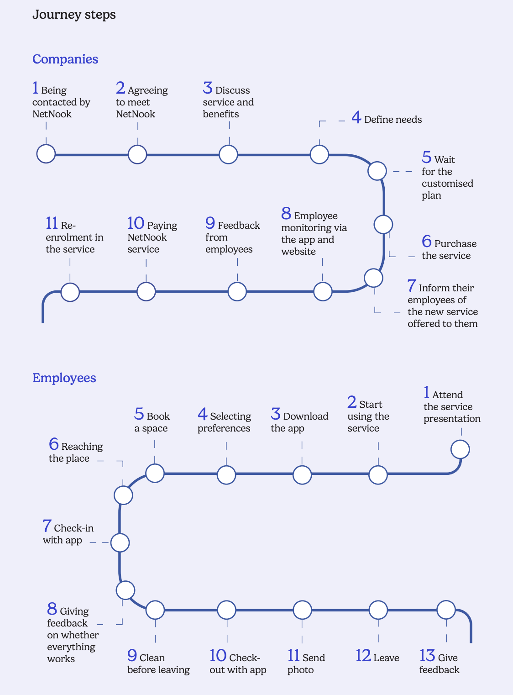
凡是公司未与 NetNook 签约的个人——自由职业者或任何认为服务对自己有价值的人，均可以个人身份订阅使用。
The service is also available to individuals whose company has no contract — freelancers or anyone who finds the service useful, signing up independently.
订阅服务时，房东可选择两种合作模式：
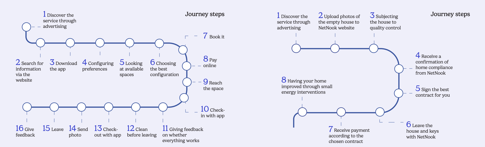
NetNook's hub is a self-contained coworking environment that decreases the energy companies use — both directly in offices and indirectly from employees' homes during remote working.
The hub covers 3000mm × 3750mm on the ground with a height of 2500mm. Designed to be light, foldable and easy to install in any apartment room.
Hub是独立的共享办公环境，占地3000×3750毫米，高2500毫米，轻巧可折叠，可安装于任何公寓房间。
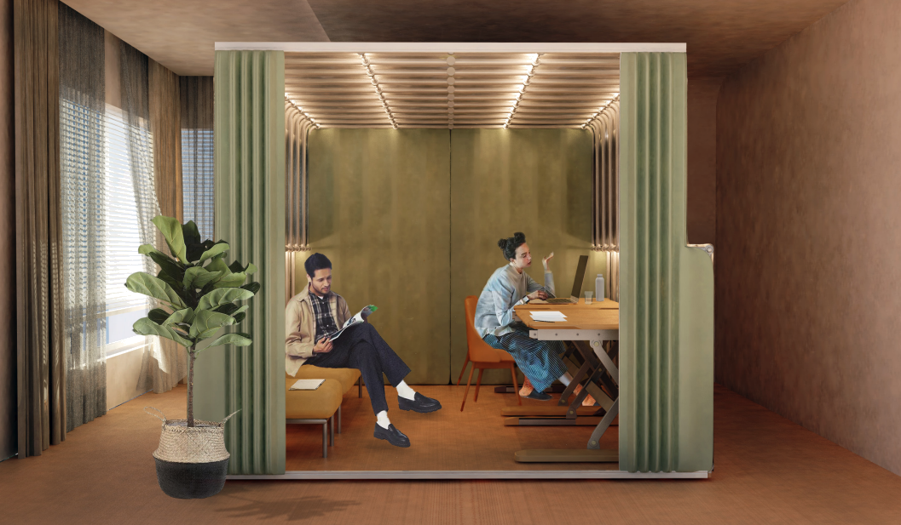
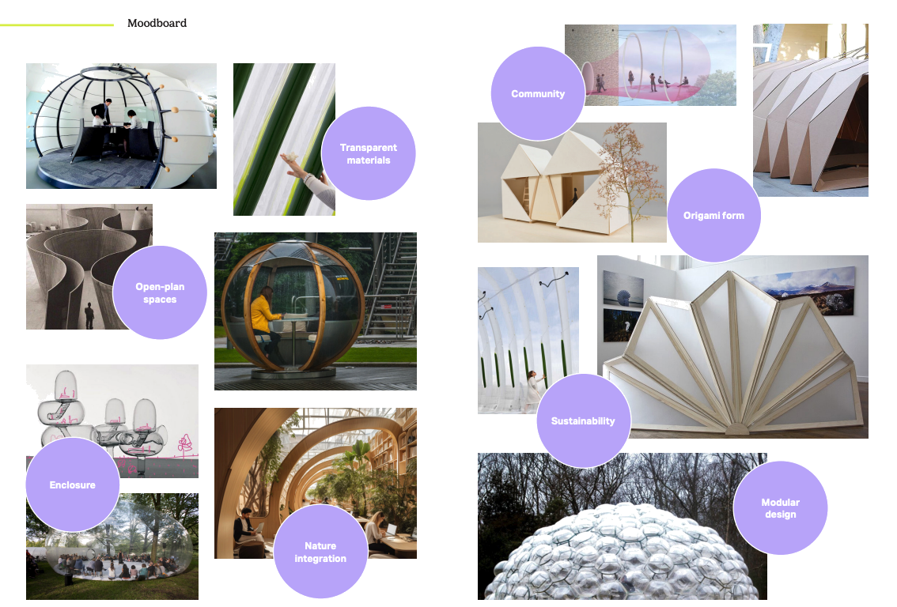
Visual references exploring transparent enclosures, foldable pavilions and nature-integrated structures — anchored by themes of adaptability, sustainability and open-plan living.
以透明性、可折叠性与自然融合为核心关键词，收集建筑装置参考图像，提炼设计灵感方向。
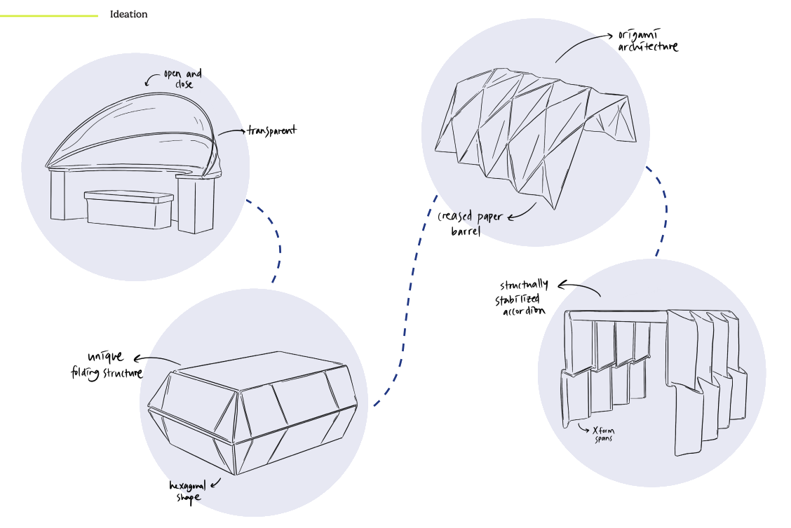
Four structural concepts sketched and compared: a transparent dome, a hexagonal folding box, an origami-barrel shell, and an accordion X-frame — evaluating portability, assembly and spatial enclosure.
手绘四种结构原型：透明穹顶、六边形折叠体、折纸筒拱与手风琴X框架，从可携带性、装配方式与空间围合性进行对比分析。
Six material systems, each engineered for portability, efficiency and comfort. / 六大材料系统，兼顾便携性、能效与舒适度。
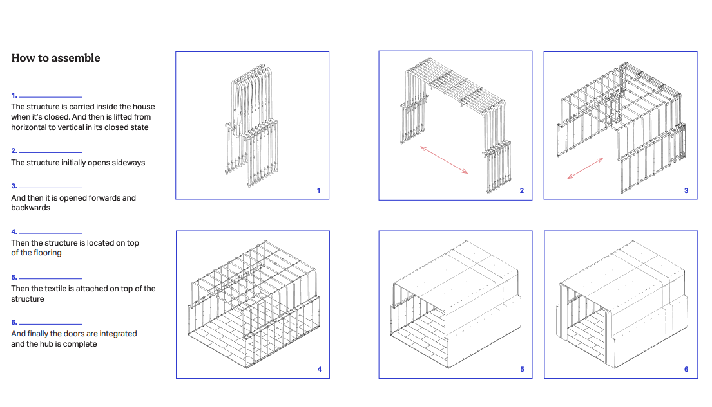
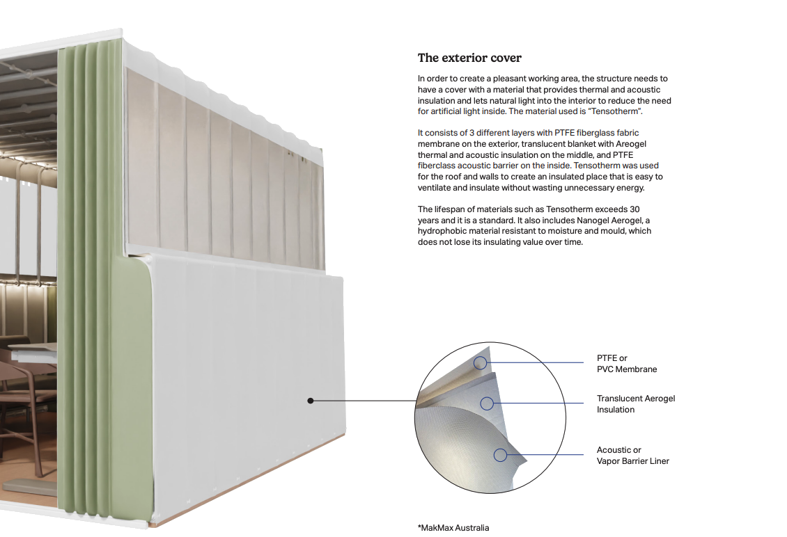
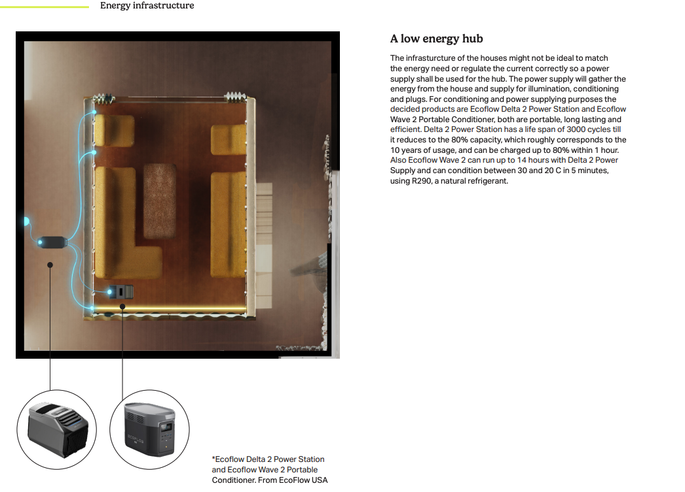
The conducted survey and research proved that employees need another location apart from their homes and offices — combining the amenities of the office with the comfort of home, without compromising time lost on transportation. NetNook's flexible structure addresses this need directly. / 调研证明，员工需要一个兼具办公便利与居家舒适的第三空间，且无需牺牲通勤时间。NetNook的灵活结构直接回应了这一需求。
Infrastructure of energy systems in old buildings can be challenging. NetNook aims to decrease consumption by diminishing artificial light, providing "green" ventilation, and allowing house owners to generate income without spending energy on their estates.
旧建筑能源基础设施挑战大。Hub通过减少人工照明、绿色通风降低能耗，也让房东无需额外支出即可获得收益。
Different locations have different needs due to usage by different people. To cover as many needs as possible, very light framed modular furniture is used, integrable within the hub in various combinations.
不同地点、不同人群需求各异。轻型模块化家具可灵活组合，覆盖多种使用场景。
The light and shrinkable structure is aimed to be easily carried and installed on site. It is light enough to be carried by 2 people, flexible enough to install on site and can easily pass through doors.
轻巧可收缩的结构，两人即可搬运安装，可顺利通过门洞，快速部署至任意房间。
Designed to fit inside city apartment rooms, its dimensions match an average Milanese room (3×4 m). The structure is composed of identical modules that can be repeated to fit spaces with different dimensions.
针对米兰标准公寓房间尺寸设计（3×4米），模块可重复拼接，适应不同空间。
The desired interior feeling is cosy and warm yet private and isolated. To achieve this, the hub uses wood flooring combined with special textiles on walls and roof — creating a contrast between the cold aluminium structure and warm fabric with wood.
内部追求温馨私密感：木质地板结合特殊织物墙体与顶面，在冷峻铝合金结构与温暖木布之间形成鲜明对比。
Of empty apartments — making them more energy-efficient, with a positive impact on productivity and the environment. / 让闲置公寓节能增效，对生产力与环境产生积极影响。
Between workers from different companies and those who live where the hubs are — creating a genuine local network. / 连接工作者与周边居民，构建本地社群。
Hubs scattered throughout the city. NetNook acts as a guarantor for short contracts, making the service reliable. / Hub遍布全城；NetNook担保短期合同，让房主放心参与。
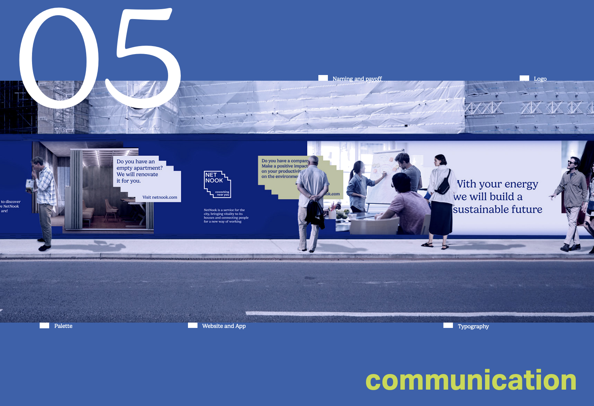
Connection, network. A connection between people in the coworking space, a network of hubs scattered across the city, and a reference to the smart technology managing energy efficiency.
连接、网络。工作者之间的连接，遍布城市的Hub网络，以及对管理能效的智能技术的指代。
Corner, refuge. A cosy and comfortable place — domestic environments improved by hub installation, transforming them into efficient and sustainable spaces.
角落、庇护所。通过安装Hub改造居家环境，将其转化为高效可持续的场所。
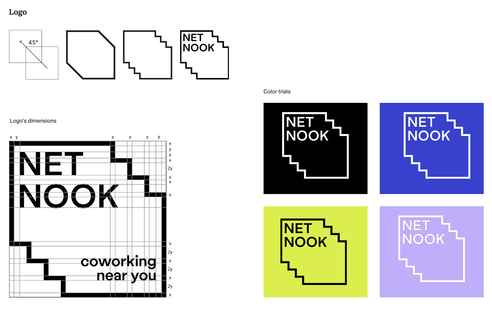
Multi-channel strategy targeting companies, workers and apartment owners. / 针对企业、员工与房主的多渠道传播策略。
Visual posts targeting workers and apartment owners — showcasing new hubs, community activities, and the latest developments to foster engagement. / 视觉内容触达员工与房主，展示Hub动态，营造社区参与感。
Accessible from all devices, with four dedicated sections: Discover More, Are You a Company?, Find a Hub Near You, and Transform Your Empty Apartment. / 四大专区，覆盖员工、企业与房主全部需求。
Brochure provided during B2B meetings to clarify the service. Poster displayed in subscribing companies' offices — encouraging workers to download the app. / 手册随商务拜访发放；海报张贴于订约企业，引导员工下载应用。
Designed to allow users to search, book and manage hubs — connecting hosts with workers while promoting energy efficiency. / 用于搜索、预约与管理Hub，连接房主与工作者，同时追踪节能数据。
Search for hubs by location and reviews. Reserve directly through the app. / 按位置与评分筛选Hub，直接在应用内完成预约。
Manage bookings, contact hosts and receive real-time notifications. / 管理订单，联系房主，接收预约实时通知。
Explore hub details — especially the "energy saved" metric. / 查看Hub全部信息，重点展示节能数据。
Leave reviews after working — building trust and guiding future users. / 工作结束后留下评价，为后续用户提供参考。
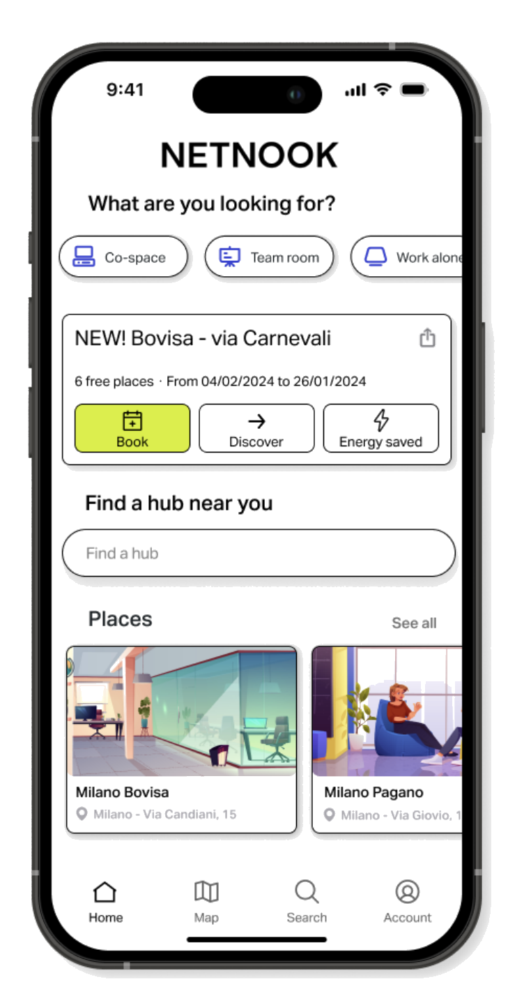
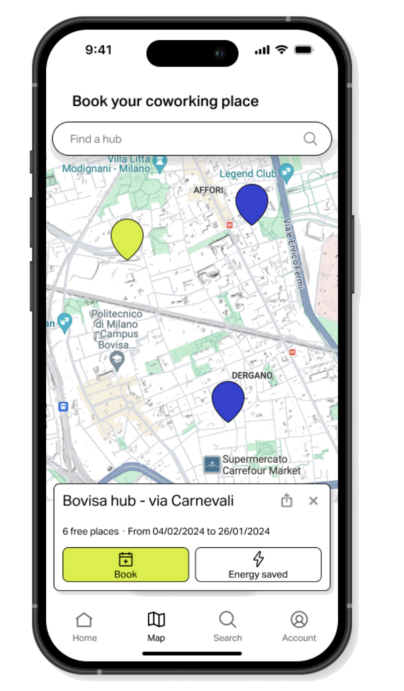
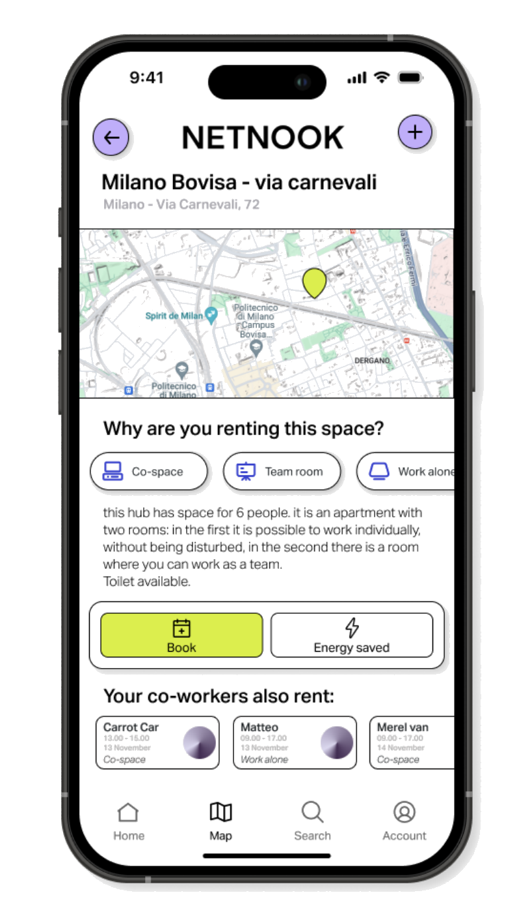
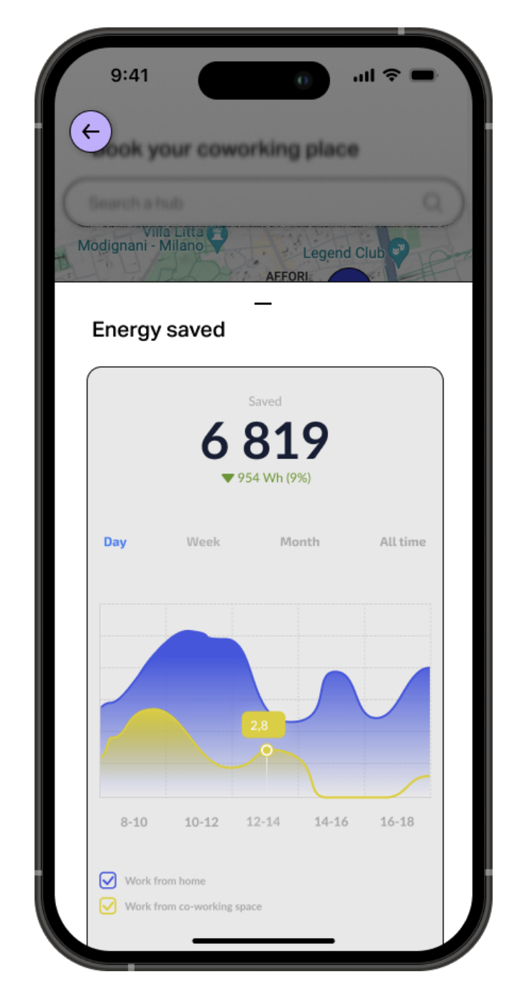